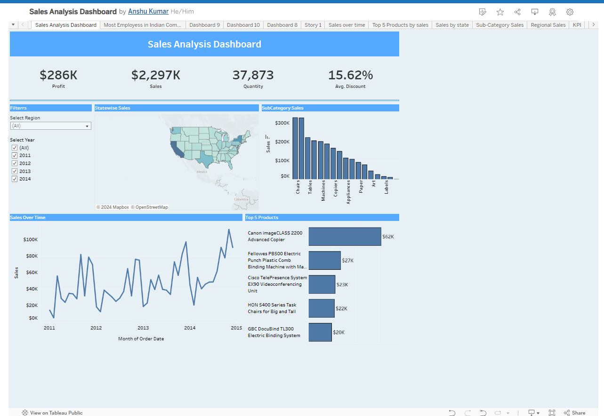
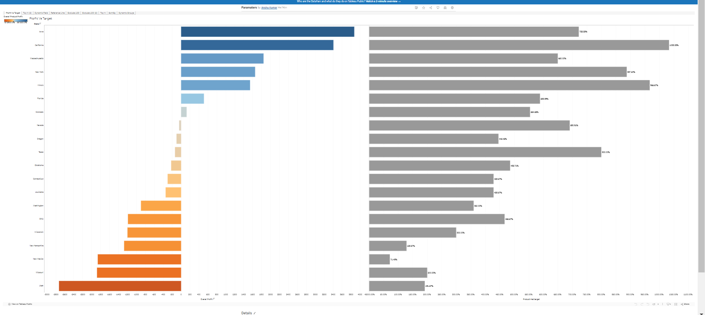
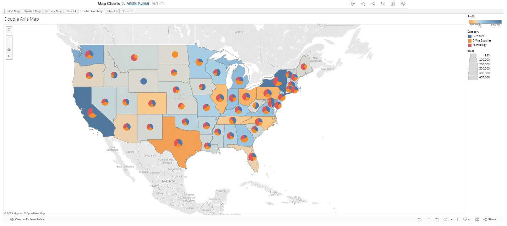

Sales Analysis Dashboard
This is a Sales Dashboard provides a visually compelling snapshot of an organization's sales performance, enabling stakeholders to quickly grasp key insights and trends. Through interactive charts, graphs, and maps, users can analyze sales data across various dimensions such as time, region, product, and customer segment.
Learn more

Different types of Charts
Here, I have created various types of charts in Tableau. Some of them include scatter plots, line charts, bar charts, heat maps, histograms, box plots, dual-axis charts, and bullet graphs.
Learn more

Different Types of Maps Charts
Tableau has six types of maps for visualizing complex and spatial data. Choropleth maps, Point distribution maps, Heatmaps or density maps, Flow maps, Proportional symbol maps, Spider maps.
Learn more